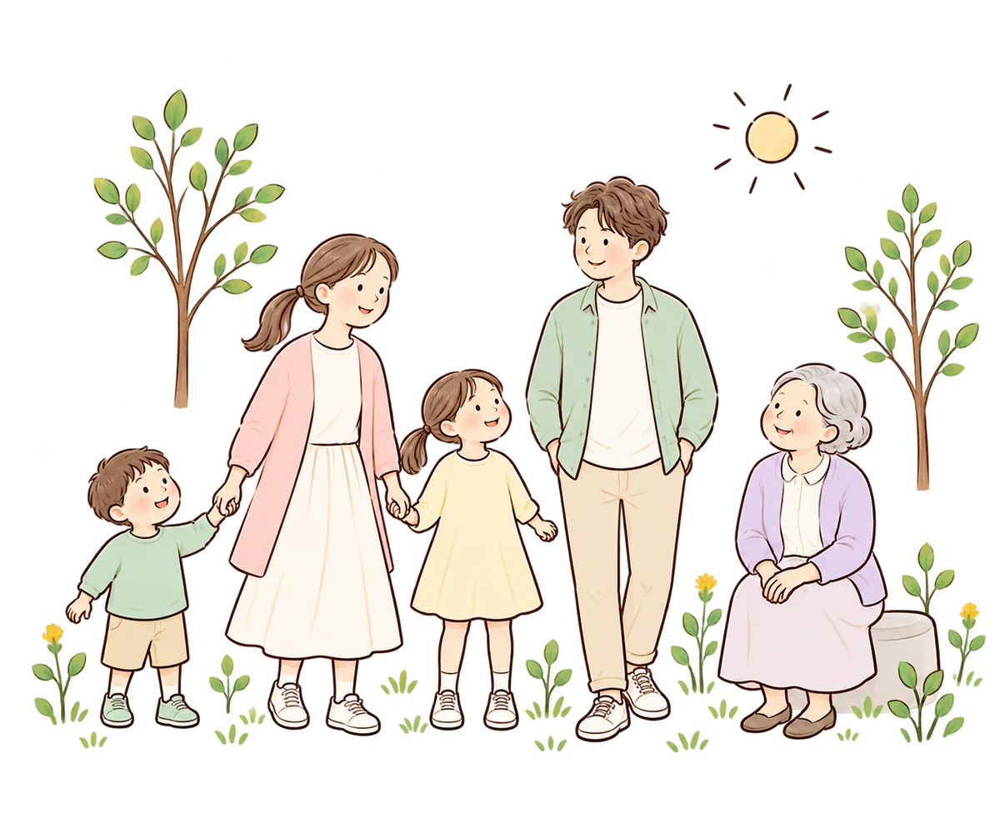

暮らしのそばに、小さな発見を。
薬のこと、健康のこと。
あなたに合う方法を、一緒に探そう。
薬の使い方、からだの変化、毎日の暮らし。
気になることを知って、できそうなことを一つ見つけよう。
子どもも、大人も、支える人も。自分のペースで使える健康と暮らしの情報サイトです。

いくつになっても、新しい芽は育つ。
FIND YOUR START
今日は、何をしたいですか？
今のあなたに近い入り口から。
知りたいこと、やってみたいことから選べます。
医療・健康の共通メニュー
薬・予防接種を調べる
年齢にかかわらず、知りたいことから。
暮らしと治療を、つなげて考える
健康習慣と薬
食事・運動・睡眠、そして薬。
健康を守るために、それぞれができること。
WHAT’S ON YOUR MIND?
今日は、何を知りたい？
年齢に関係なく、気になることから探せます。
知りたいことを探す
質問から探す、解説から探す、テーマから探す。あなたに合う探し方を選べます。
健康・お薬の情報を探す →ONE SMALL STEP
小さな一歩を見つけよう
答えを急がず、今の自分に気づくことから。
「これならできそう」を、一緒に探してみませんか。
気づく → 知る → 考える → 選ぶ → やってみる
約1分・体験サンプル
これからも、続けたいことは？
あなたが大切にしたい時間から、
今日の小さな一歩を考えます。
ABOUT MIRAI LAB
確かな情報を、
暮らしにやさしい言葉で。
ミライラボは、薬剤師の専門性を生かして、薬・健康・暮らしをつなぐサイトを目指しています。知ることから、自分に合う選択へ。大切な人も、自分も大切にするための情報を届けます。
子ども・若者、大人、高齢者、家族・支援者向けの解説を掲載しています。子どものお薬52記事は医療者による最終確認前のため、公開前の確認用です。